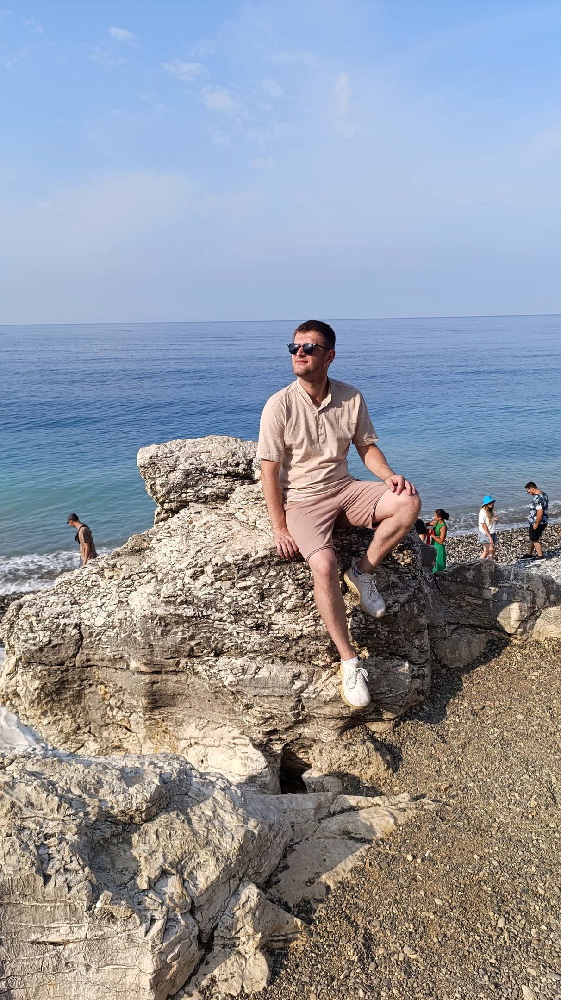
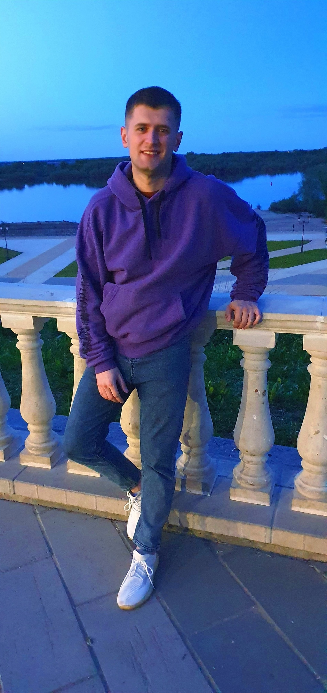

Моя первая веб-страница
 
Про меня
Привет меня зовут Роман. Я работаю Инженером-технологом судостроения.
Я начинающий Fullstack веб-разработчик на JavaScript и PHP. С октября 2024 года я начал изучать данное направление в онлайн школе Skillfactory . Мне очень нравитсся учиться чему-то новому. Очень надеюсь , что после прохождения курса смогу найти по настоящему любимую работу!
Начиная с момента как мне купили первый компьютер и провели интернет мне было интересно вообще все что происходит в этом самом интеренете.
На а где как не на сайтах мы проводим большую часть времени в интернете.
В детстве с друзьями меняли информацию о ком либо на сайте Vk.com через панель разработчика-прикалывались друг над другом.
Живу в городе Муром (Да это то место где родился Илья Муромец). Обожаю просыпаться не по будильнику.
Чему я хочу научиться
Хочу научится всему, что связанно с Web